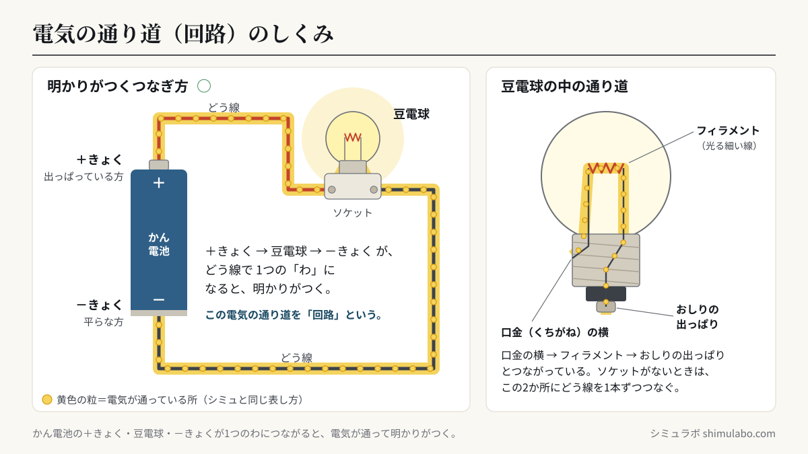
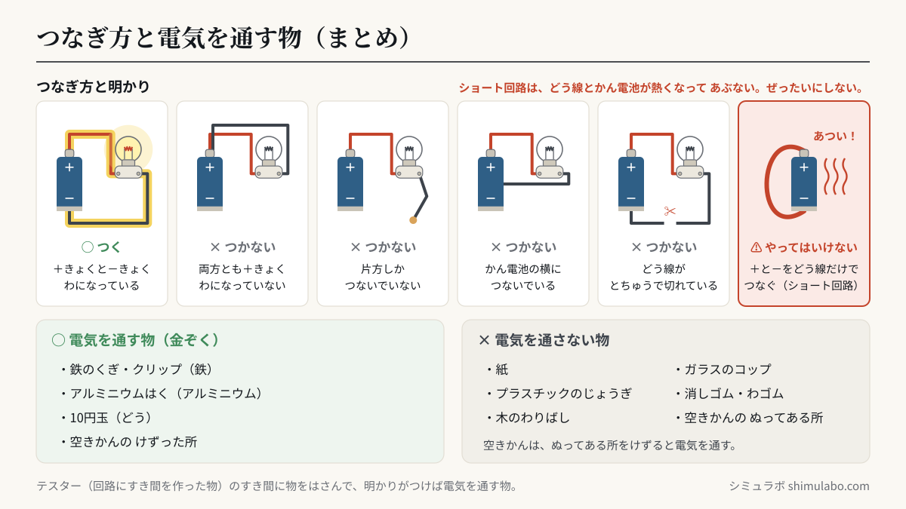

このシミュレーションでわかること
かん電池の＋きょく、豆電球、かん電池の－きょくが、どう線で1つの「わ」のようにつながると、電気の通り道（回路）ができて、豆電球に明かりがつきます。どう線が片方しかつながっていない、両方とも同じきょくにつないでいる、かん電池の横（きょくではない所）につないでいる、どう線がとちゅうで切れている、豆電球がゆるんでいる――このようなときは、わがとぎれているので明かりはつきません。回路のとちゅうに物をはさんで調べると、鉄・アルミニウム・どうなどの金ぞくは電気を通し、紙・プラスチック・木・ガラス・ゴムは電気を通しません。
授業での使い方
導入：明かりがつくつなぎ方を予想する（①つなぎ方を調べる）
実物の豆電球・ソケット・かん電池を配る前に、電子黒板でこのシミュレーターを見せ、「どこにどう線をつなぐと明かりがつくかな」と予想させます。赤いどう線は＋きょくにつながっています。黒いどう線の先を指で動かして、－きょく・＋きょく・かん電池の横などにつなぎ、明かりがつくかどうかを確かめます。右の「ためしたつなぎ方」に結果が残るので、つくつなぎ方とつかないつなぎ方をくらべ、共通点（わになっているか）を話し合えます。
展開：つかないわけを考える・ショート回路の危険を知る
「つなぎ方の例」から「どう線が切れている」「かん電池の横」を選んだり、豆電球をタップしてゆるめたりして、明かりがつかないわけを「回路」という言葉で説明させます。「ショート回路」は実験では絶対にやってはいけないつなぎ方です。シミュレーター上で危険マークを見せ、なぜあぶないのかを全員で確認してから実験に入ると安全です。
まとめ：電気を通す物・通さない物（②電気を通す物を調べる）
テスター（回路にすき間を作った物）のすき間に、身の回りの物を入れて調べ、表に仲間分けします。空きかんは、ぬってある所では明かりがつかず、紙やすりでけずった所ではつきます。「電気を通す物には、どんな共通点があるかな」と問い、金ぞくという言葉につなげます。
児童への問いの例
- 豆電球に明かりがつくのは、どう線をかん電池のどこにつないだときでしょう？ つかなかったつなぎ方と、何がちがいますか？
- どう線が両方ともかん電池につながっているのに、明かりがつかないことがありました。どうしてでしょう？
- 空きかんは、そのままでは明かりがつかないのに、けずるとつきました。どうしてでしょう？
しくみ・解説






図はタップすると大きく表示されます。授業のプリント・スライド・板書計画に自由に使えます（出典「シミュラボ」とページのURLを添えてください）。
言葉の意味（1文で）
- 回路とは、かん電池の＋きょくから豆電球などを通って－きょくまで、電気が通る1つのわのような通り道のことです。
- ＋きょく・－きょくとは、かん電池の両はしにある、電気の出入り口のことで、出っぱっている方が＋きょく、平らな方が－きょくです。
- どう線とは、電気を通すどう（金ぞく）の線を、電気を通さないビニルでおおった物のことです。
- 金ぞくとは、鉄・アルミニウム・どうなどのなかまのことで、電気を通す、みがくと光るなどのせいしつがあります。
- ショート回路とは、かん電池の＋きょくと－きょくを、豆電球などを通さずにどう線だけでつないでしまう、とてもきけんなつなぎ方のことです。
つなぎ方の早見表
| つなぎ方 | 明かり | わけ |
|---|---|---|
| ＋きょく と －きょく | つく ○ | 1つのわになっている（回路ができている） |
| 両方とも ＋きょく（または －きょく） | つかない × | わになっていない |
| 片方だけつなぐ | つかない × | わがとぎれている |
| かん電池の横につなぐ | つかない × | きょく以外の所では、電気の通り道にならない |
| どう線がとちゅうで切れている | つかない × | 回路の一部が切れている |
| 豆電球がゆるんでいる | つかない × | 豆電球とソケットがつながっていない |
| ＋きょくと－きょくをどう線だけでつなぐ | やってはいけない ⚠ | ショート回路。どう線やかん電池が熱くなってあぶない |
電気を通す物・通さない物の早見表
| 調べた物 | できている物 | 電気 |
|---|---|---|
| 鉄のくぎ・クリップ | 鉄 | 通す ○ |
| アルミニウムはく | アルミニウム | 通す ○ |
| 10円玉 | どう（どうのなかま） | 通す ○ |
| 空きかん（けずった所） | 鉄やアルミニウム | 通す ○ |
| 空きかん（ぬってある所） | 表面のとりょう（ぬり物） | 通さない × |
| 紙 | 紙 | 通さない × |
| プラスチックのじょうぎ | プラスチック | 通さない × |
| 木のわりばし | 木 | 通さない × |
| ガラスのコップ | ガラス | 通さない × |
| 消しゴム・わゴム | プラスチックなど・ゴム | 通さない × |
電気を通す物は、どれも金ぞくでできています。空きかんは鉄やアルミニウムでできていますが、表面がとりょうなどでぬってあると、そこでは電気が通りません。紙やすりでけずって金ぞくを出すと、電気を通します。
ソケットを使わないとき（豆電球のつなぎ方）
豆電球の中の細い線（フィラメント）の両はしは、口金の横の部分と、おしりの出っぱりの2か所につながっています。ソケットを使わずに明かりをつけるときは、この2か所にそれぞれどう線をつなぎ、かん電池の＋きょくと－きょくにつなぎます。どちらか1か所だけでは、わになりません。
先生向けの補足
・電流の向き（＋極→－極）は第4学年「電流の働き」で扱います。本シミュレーターの黄色い粒は「電気が通っている」ことを示すための表示です。
・内容の取扱い（1）で、第3学年のA区分では3種類以上のものづくりを行うことになっています。スイッチやテスター、回路を使ったおもちゃ（電気を通す物を使ったクイズ・迷路など）が例です。
このシミュレーションで単純化していること
- どう線の長さや太さ、かん電池の電気の残りぐあいは考えていません。明かりは「つく」「つかない」の2通りで表しています。
- ショート回路は、実際にはどう線とかん電池が熱くなり、豆電球はほとんど光らなくなります。シミュレーターでは危険を知らせて、数秒でどう線を外すようにしています。
- 「電気を通す・通さない」は、豆電球がつくかどうかで分けています。えんぴつのしん（黒えん）や水道水などは電気をわずかに通しますが、かん電池1個と豆電球では明かりがつかないことが多いため、ここでは扱っていません。
参考
- 文部科学省「小学校学習指導要領（平成29年告示）解説 理科編」第3学年 A（5）電気の通り道（小学校学習指導要領・解説）
- 小学校理科の教科書（第3学年「電気の通り道」の単元）
- 一般社団法人 電池工業会「電池の正しい使い方」（ショートさせない・ほかの金属と一緒に持ち歩かない などの注意）
引用・転載について
本ページのシミュレーション結果・数値は、出典を明記いただければブログ・ニュース記事・SNS・授業や社内資料への引用を歓迎します。事前連絡は不要です。
出典：シミュラボ「電気の通り道シミュレーター（回路・電気を通す物）」 https://shimulabo.com/sims/denki-toorimichi/よくある質問
- 豆電球に明かりがつくのは、どんなつなぎ方ですか？
- かん電池の＋きょく、豆電球、かん電池の－きょくが、どう線で1つのわのようにつながったときです。このような電気の通り道を回路といいます。
- どう線を両方ともかん電池につないだのに、明かりがつかないのはなぜですか？
- 両方とも同じきょく（＋きょくだけ・－きょくだけ）につないでいる、かん電池の横（きょくではない所）につないでいる、どう線がとちゅうで切れている、豆電球がゆるんでいる、などで、わがとぎれているからです。
- ショート回路とは何ですか？なぜあぶないのですか？
- かん電池の＋きょくと－きょくを、豆電球などを通さずにどう線だけでつなぐことです。大きな電気が流れて、どう線やかん電池が熱くなり、やけどや液もれの原因になるので、絶対にやってはいけません。
- 電気を通す物と通さない物は、どうちがいますか？
- 電気を通す物は、鉄・アルミニウム・どうなどの金ぞくでできています。紙・プラスチック・木・ガラス・ゴムは電気を通しません。
- 空きかんは電気を通しますか？
- 空きかんは鉄やアルミニウムでできているので、金ぞくが出ている所は電気を通します。ただし、表面がとりょうなどでぬってある所は電気を通さないので、紙やすりでけずってから調べると明かりがつきます。
- 10円玉は電気を通しますか？
- 通します。10円玉はどう（どうのなかまの金ぞく）でできているので、テスターのすき間に入れると明かりがつきます。